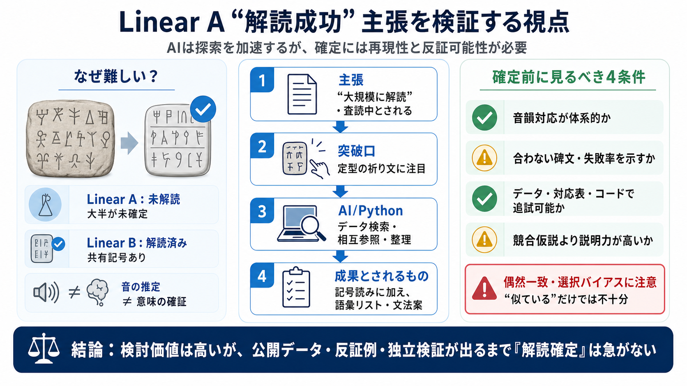

Linear A
# Linear A. | Linear A inscription on a cup | |. **Linear A** is a writing system that was used by the Minoans of Crete …

# Linear A. | Linear A inscription on a cup | |. **Linear A** is a writing system that was used by the Minoans of Crete …
AI. Linear A shows significant overlap with Hurrian, especially in religious contexts. The text deciphers key Linear A s…
On Jan Best's "Decipherment" of Minoan Linear A GARY A. P. Best has been publishing material towards the decipherment an…
A New Approach to the Decipherment of Linear A: Coding to Decipher Linear A, Stage 2 - Cryptanalysis and Language Deciph…
A Ukrainian linguist has achieved a minor sensation - the decipherment of Linear A under the assumption that, like Linea…